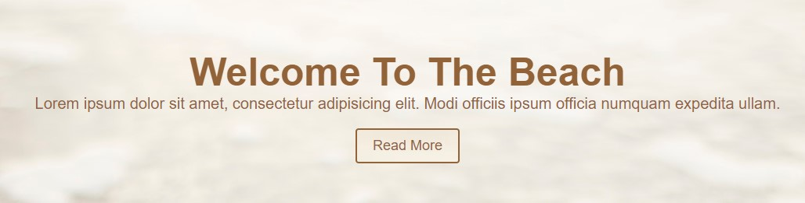
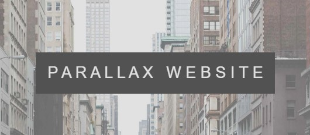
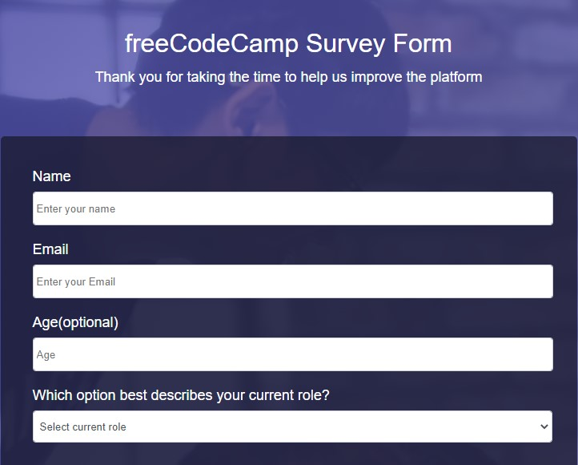
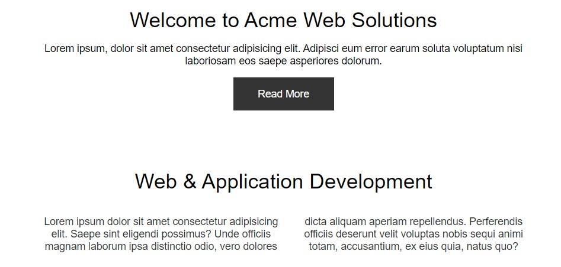

Projetos em HTML e CSS
Welcome Beach
O site Welcome tem uma imagem de fundo, um button onde existe um efeito pointer, assim que o usuário passar o mouse em cima do elemento.
ele muda de cor. Também contendo o uso de uma imagem de fundo e elementos posicionados lado a lado.
Link do código
GitHubParallax Website
Um site de paralaxe inclui imagens fixas em segundo plano que você pode manter no lugar
e pode rolar a página para baixo para ver diferentes partes da imagem. Com conhecimento básico
de HTML e CSS, você pode dar um efeito de paralaxe a um site. Usar o efeito de paralaxe em web
design é muito popular e dá uma aparência bonita à página da web.
Link do código
GitHubSurvey Form
Familiarizando com o campo de entrada ou tags básicas em HTML para criar
um formulário, como usar um campo de texto, caixa de seleção, botão de opção, data e
outros elementos importantes em um único formulário.
Link do código
GitHubWelcome
Página web Welcome, onde existem divisórias de 3 elementos lado a lado, contendo 1 imagem em cada elemento.
Link do código
GitHub